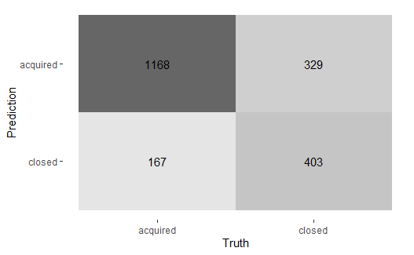

Start-ups opkøbt
eller lukket
Et unsupervised og supervised machine learning projekt

Undersøgelse af hvilke variable, der er essentielle for, at start-ups i USA bliver opkøbt eller lukker ved brug af unsupervised machine learning tekniker.
Projektet viser, at de vigtigste variable for, om en amerikansk start-up bliver opkøbt er antallet af relationer/størrelse af netværk samt den totale mængde funding de får.
Yderligere er den opstillede random forrest model i stand til at forudsige start-ups'nes skæbne med en 77% præcision, der er billedligt illustreret ovenfor i en confusion matrix.
Alt anvendt kode kan hentes her under samt et kortere skriv om projketets resultater.
Genre forudsigelse og anbefalingssystem
Et netværksanalyse og neurolingvistisk programmeringsprojekt
Data fra IMDB er blevet anvendt til at undersøge, om filmbeskrivelser kan anvendes til at forudsige genren på film,
og efterfølgende er selv samme beskrivelser blevet anvendt til at lave et anbefalingssystem, der finder sammenlignelige film.
Projektet viser, at multiclass random forest modellen har en accuracy på lidt over 52%, hvilket er nogenlunde tilfredsstillende givet,
at det arbejdes med en multiclass model. Modellens store problem er, at den har svært ved at skille thriller fra de andre anvendte genre som drama og horror.
Derimod gav anbefalingssystemet fine resultater, hvor der i billedet ovenfor kan ses resultatet af en søgning på film, der minder om Alice i eventyrland,
hvor man uden og have set filmen må vurdere, at i hvert fald tre af forudsigelserne er spot on.
Alt anvendt kode kan hentes her under samt et kortere skriv om projketets resultater.
Stemnings/følelses forudsigelse
Et supervised machine learning og neural network projekt
Data for næsten 210.000 sange er blevet brugt til at forsøge, at forudsige en sangsstemning ud fra dens lyrik.
Labels er blevet lavet ved at tjekke stemningen ved hvert enkelt ord i hver sang og summmere dem sammen for at finde den samlede stemning.
Efterfølgende er machine learning modeller og neural network modeller som ANN, RNN og LSTM blevet brugt for at se,
om dataet bedst bliver forklaret af en machine learning model eller de mere komplicerede neural network modeller.
Her viste machine learning modellen at gøre det bedst, grundet strukturen af dataet og de hjemmelavede labels, med en accuracy på 74%.
Videre undersøgelser efter afslutning af projektet har dog vist, at en bidirectional GRU/LSTM model med på forhånd trænede embedings gav en forbedret accuracy på 80%.
Alt anvendt kode kan hentes her under samt et kortere skriv om projketets resultater.
Sammenhængen mellem C20-aktieindekset og
danske makroøkonomiske variable: En
ARDL-Bounds testing approach
Empirisk projekt, 5. semester
Følgende projekt satte sig for at undersøge sammen-hængen mellem udvalgte danske makroøkonomiske variable og væksten i det danske C20-aktieindeks.
Dette blev gjort med en økonometrisk tilgang gennem en ARDL-Bounds test, der har til formål at teste for cointegration og dermed langsigtet forhold mellem det indholdte variable.
Projektets resultater fandt signifikante langsigtede sammenhænge mellem C20-indekset, BNP og den lange rente. For BNP blev det observeret, at en stigning på én milliard kroner i BNP vil forårsage en vækst i
aktiemarkedet på 0.6%. Yderligere vil C20-indekset stige med 14%, når den lange rente
falder med ét procentpoint. Disse resultater stemmer overens med de teoretiske såvel som
empiriske antagelser om, at BNP er positivt korreleret med væksten i C20-indekset, mens
den lange rente er negativt korreleret med væksten i C20-indekset.
Projektet i sin fulde længde kan downloades her under samt den anvendte kode.
Spekulativt valutaangreb
Makroøkonomisk projekt, 4. semester
I forbindelse med det schweiziske depeg og efterfølgende det spekulative angreb på den danske krone undersøger dette projekt,
hvordan den Danske Nationalbank var i stand til at bibeholde den faste valutakurs fra 1982.
Endvidere ses der på de teoretiske konskvenser ved at depege sin valuta kontra at bibeholde fastkurspolitikken, der underbygges med empiri fra Schweiz og Danmark.
Den samlede projektanalyse kunne konkludere, at nettoværdien for Den Danske Nationalbank, samt
troværdigheden af denne, spillede en central rolle i bibeholdelsen af fastkursregimet. Dette
var en essentiel faktor, hvor Mundell-Fleming-modellen dertil foreskrev en økonomisk
gevinst ved fortsat bibeholdelse af fastkursregimet, som samtidig var i overensstemmelse
med den faktisk observerede empiri.
Projektet i sin fulde længde kan downloades her under.